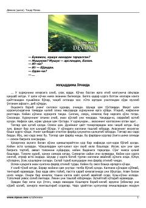

DTohir Malik qalamiga mansub falsafiy-fantastik qissa.
Ushbu asar o'zbek adibi Tohir Malik qalamiga mansub bo'lib, unda inson ruhiyati, iymon va tafakkur masalalari o'ziga xos fantastik syujet orqali yoritiladi. Voqealar rivoji Buxoro amirligi davri va o'zga sayyoraliklar tashrifi bilan bog'liq holda tasvirlanadi.